Contents
Usage
The simplest way to insert an image is to use \externalfigure like:
-
\setuppapersize[A8] \starttext \externalfigure[cow.pdf] \stoptext
- 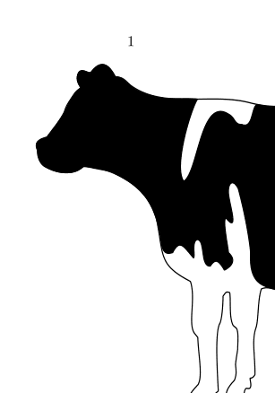
This command places the PDF image cow.pdf in a \vbox; the width and height of the image are equal to the natural dimensions of the image.
To set the width of the image to a specific size, say 1cm, or to set the height of the image to a specific size, say 2cm, use:
-
\setuppapersize[A8] \starttext \externalfigure[cow.pdf][width=1cm] \externalfigure[cow.pdf][height=2cm] \stoptext
- 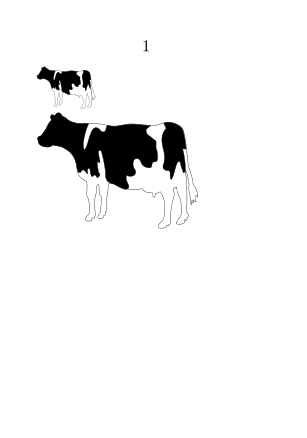
If only the width or height of the image is specified, the other dimension is scaled appropriately to keep the aspect ratio.
To include a specific page, say page 66, of a multi-page PDF file, use the page= option:
-
\setuppapersize[A8] \starttext Cover: \externalfigure [http://www.pragma-ade.nl/general/manuals/luametafun.pdf] [width=1.5cm] Page 66: \externalfigure [http://www.pragma-ade.nl/general/manuals/luametafun.pdf] [width=1.5cm, page=66] \stoptext
- 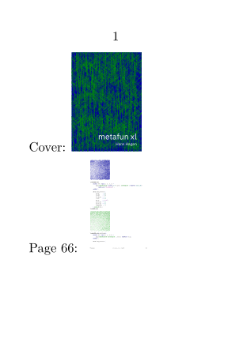
These three variations cover the most common use cases.
One remark with PDF files, by default, the interactive elements of the included PDF file are discarded. To enable the interactive elements of the included PDF file, use
\externalfigure[filename.pdf][interaction=yes]
For further reading, don't forget Including pages from PDF documents, and have a look to all the potential options of \externalfigure defined in \setupexternalfigure.
File formats and file conversion
Native support without conversion
ConTeXt natively supports the image formats enumerated below. The image format is determined from the file extension (case insensitive).
- PDF : File extension .pdf
- MPS (MetaPost output): File extension .mps or .<digits>
- JPEG : File extension .jpg or .jpeg
- PNG : File extension .png
- JPEG 2000 : File extension .jp2
- JBIG or JBIG2 : File extension .jbig , .jbig2 , or .jb2
An old page (2010), gives details on supported File formats
Native support with conversion
The image file formats listed in the previous section are the ones that may be embedded directly in a PDF. ConTeXt also supports a few other formats that are first converted to PDF using an external program. Of course, for such a conversion to work, the corresponding converter must be in the PATH.
| Format | Extension | Converter |
| SVG | .svg, .svgz |
inkscape |
| EPS | .eps, .ai |
gs (or gswin32c on Windows) from Ghostscript |
| GIF | .gif |
gm convert from GraphicsMagick |
| TIFF | .tiff |
gm convert from GraphicsMagick |
| BMP | .bmp |
gm convert from GraphicsMagick |
The conversion generates a PDF file with prefix m_k_i_v_ and a suffix .pdf added to the name of the original file. The result is cached, and the conversion is re-run if the timestamp of the original file is newer than that of the converted file.
In LMTX, the file name contains a MD5 hash of the relevant source image parameters (resolution, dimensions, ...), e.g.:
hacker_jpg_c60ccda70ef92e32d7a6334f31c23259.gray.pdf
It is possible to change the converter used with the following code:
\startluacode
local function downsampler(oldname, newname, resolution)
if not resolution or resolution == "" then
resolution = 50
end
os.execute(string.format(
'gm convert -density %ix%i "%s" "%s"',
resolution, resolution, oldname, newname)
)
end
-- Set the PDF and default TIFF converters to the above function.
figures.converters.tif.pdf = downsampler
figures.converters.tif.default = downsampler
-- Hint: This works also for jpg or png!
\stopluacode
\starttext
% Substitute any TIFF here.
\externalfigure[cow.tiff]
\stoptext
See also grph-inc.lua
Image files locations
Local image files
By default, ConTeXt searches an image in the current directory, the parent directory, and the grand-parent directory.
To search for images in other directories, for example a ./images subdirectory and /home/user/images, use \setupexternalfigures:
\setupexternalfigures[directory={images, /home/user/images}]
Note: always use forward slashes (/) in path names, regardless of operating system.
The default search order is: the current directory, the parent directory, the grand-parent directory, and then the paths specified by the directory key. To restrict image search only to the paths specified by the directory key, use:
\setupexternalfigures[location=global]
To restore the default search behavior, use:
\setupexternalfigures[location={local,global}]
The ConTeXt distribution includes three sample images: cow.pdf, mill.png, and hacker.jpg, that are useful when creating minimum working examples to illustrate a bug on the mailing list. These images are located in the TEXMF directory. To add the TEXMF directory to the image search path, use:
\setupexternalfigures[location={local,global,default}]
The above alternative adds the entire TEXMF directory to the search path, including the doc/ directory! Therefore, one needs to be extremely careful when using this option. In fact, I would advise not using location=default except for illustrative minimal working examples.
Remote image files and cache
The \externalfigure command supports reading files from web servers, for example:
-
\setuppapersize[A8] \starttext \externalfigure [http://www.pragma-ade.nl/general/manuals/style.pdf] [factor=fit] \stoptext
- 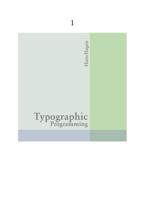
When a document containing a remote file is compiled for the first time, the remote file is downloaded from the server and stored in the LuaTeX cache directory. This cached file is used during subsequent runs.
Normally, the remote image is downloaded again if the image in the cache is older than 1 day. To change this threshold to, for example, 2 minutes (120 seconds), either add
\enabledirectives[schemes.threshold=120]
in the ConTeXt file, or compile the ConTeXt file using the command
context --directives=schemes.threshold=120 <em>filename</em>
The variable schemes.threshold is global, so changing its value affects all other macros like \input, \usemodule, \component, etc. that load remote files.
HTTP Proxy
To use an http proxy for fetching images, the http variable (LuaSocket) has to be set up as follows:
\ctxlua{http = require("socket.http"); http.PROXY = "http://proxy.example.com:3128"}
Replace http://proxy.example.com:3128 with the proxy URL.
To disable the proxy again:
\ctxlua{http = require("socket.http"); http.PROXY = nil}
HTTPS
For self-signed certificates retrieved over HTTPS, the curl command requires a flag to retrieve insecure files, which is not enabled by default. Open tex/texmf-context/tex/context/base/mkiv/data-sch.lua to find:
local function runcurl(name,cachename) -- we use sockets instead or the curl library when possible
local command = "curl --silent --create-dirs --output " .. cachename .. " " .. name
os.spawn(command)
end
Insert the -k or --insecure option:
local command = "curl --insecure --silent --create-dirs --output " .. cachename .. " " .. name
Transformations
Image Scaling
| NOTE: If either width or height is specified, then the scale key has no effect. |
To scale an image use the scale key: scale=1000 corresponds to the original dimensions of the image, scale=500 scales the image to 50% of the original size, scale=1500 scales the images to 150% of the original size, and so on. For example:
-
\setuppapersize[A8] \starttext \externalfigure[cow.pdf][scale=500] \stoptext
- 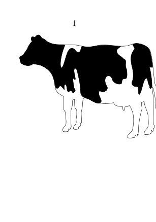
scales the image to 50% of its size.
Use \setupexternalfigures to set the scale of all images. For example, to scale all images to be twice their original size, use:
-
\setuppapersize[A8] \starttext \externalfigure[cow.pdf][scale=2000] \stoptext
-

In addition, the xscale and yscale keys scale the image in only one dimension. For example:
-
\setuppapersize[A8] \starttext \externalfigure[cow.pdf][yscale=500] \stoptext
- 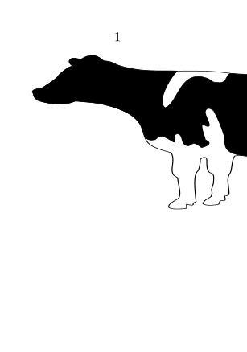
Scaling changes the visible size of a picture, but not the data or file size. If you want to reduce your file size by decreasing image resolution, see Downsampling.
Image Dimension Restriction
ConTeXt can limit included images to particular dimensions. For example, to ensure that an included image is not more than 0.2\textwidth:
-
\setuppapersize[A8] \starttext \externalfigure [cow.pdf] [maxwidth=0.2\textwidth] \stoptext
-

If maxwidth is specified and the width of the image is less than maxwidth, then the image is not scaled; if the width of the image is greater than maxwidth, then the width is restricted to maxwidth and the height is scaled appropriately to maintain the original aspect ratio.
The option maxheight is analogous to maxwidth, for checking the height of the image.
For example, to ensure that figures do not overflow the text~area, one may set:
-
\setuppapersize[A8] \starttext \externalfigure [cow.pdf] [maxwidth=\textwidth, maxheight=0.8\textheight] \stoptext
- 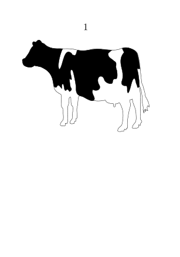
Image Rotation
Rotate included images with the orientation key of \externalfigure. For example:
-
\setuppapersize[A8] \starttext \externalfigure [cow.pdf] [width=2cm, orientation=90] \externalfigure [cow.pdf] [width=2cm, orientation=40] \stoptext
- 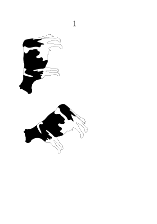
Image Mirroring
\externalfigure has no mirroring key. To mirror (flip) an image, use the generic \mirror command. For example, to mirror horizontally:
-
\setuppapersize[A8] \starttext \externalfigure [cow.pdf] [width=3cm] \mirror{ \externalfigure [cow.pdf] [width=3cm]} \stoptext
- 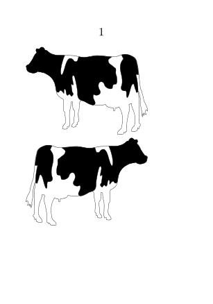
To mirror vertically, first rotate the image by 180° and then mirror it:
-
\setuppapersize[A8] \starttext \externalfigure [cow.pdf] [width=3cm] \mirror{ \externalfigure [cow.pdf] [width=3cm, orientation=180]} \stoptext
- 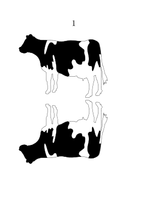
Image Clipping
Clip an image using the generic \clip command. For example, to clip the original image to a 1cm x 2cm rectangle at an offset of (3mm,5mm) from the top left corner:
-
\setuppapersize[A8] \starttext \clip [width=1cm, height=2cm, hoffset=3mm, voffset=5mm] {\externalfigure [cow.pdf] [width=3cm]} \stoptext
- 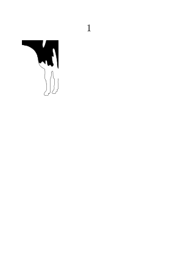
As another example, this cuts the image into a 3x3 pieces and then outputs the (2,2) piece:
-
\setuppapersize[A8] \starttext \clip [nx=3, ny=3, x=2, y=2] {\externalfigure [cow.pdf] [width=3cm]} \stoptext
In PDF files, it is possible to specify different size information in PDF headers MediaBox, TrimBox, CropBox, and ArtBox (see PDF boxes). To clip to one of these sizes, use
\externalfigure[logo.pdf][size=art]
Other options are:
-
none(detault) -
mediafor MediaBox -
cropfor CropBox, -
trimfor TrimBox, -
artfor ArtBox.
Troubleshooting
This section describes various tips for discovering problems with embedded images.
Visualize Bounding Box
If, for instance, the image is taking more space than expected, it can be useful to visualize the bounding box of the image. To do this:
-
\setuppapersize[A8] \starttext \externalfigure [cow.pdf] [width=3cm, frame=on] \stoptext
-

ConTeXt includes a script pdftrimwhite that removes extra white space at the borders of a PDF file. To run this script:
mtxrun --script pdftrimwhite [flags] input output
The most important flag is --offset=dimen, which keeps some extra space around the trimmed image.
Similar functionality is provided by another Perl script, pdfcrop, that is included in most TeX distributions.
Diagnostic Tracking
To get diagnostic information about image inclusion, enable the tracker graphics.locating by editing the ConTeXt file and adding:
\enabletrackers[graphics.locating]
Alternatively, compile the ConTeXt file using:
context --trackers=graphics.locating filename
The tracker writes diagnostics to the console. Suppose we use \externalfigure[somefile.pdf] and ConTeXt finds the file in the current search path; then the following information is printed on the console:
graphics > inclusion > locations: local,global graphics > inclusion > path list: . .. ../.. graphics > inclusion > strategy: forced format pdf graphics > inclusion > found: somefile.pdf -> somefile.pdf graphics > inclusion > format natively supported by backend: pdf
If the file somefile.pdf is not found in the current search path, then the following information is printed on the console (even if the graphics.locating tracker is not set):
graphics > inclusion > strategy: forced format pdf graphics > inclusion > not found: somefile.pdf graphics > inclusion > not found: ./somefile.pdf graphics > inclusion > not found: ../somefile.pdf graphics > inclusion > not found: ../../somefile.pdf graphics > inclusion > not found: images/somefile.pdf graphics > inclusion > not found: /home/user/images/somefile.pdf graphics > inclusion > format not supported:
and a placeholder gray box is put in the output:
-
\setuppapersize[A8,landscape] \starttext \externalfigure[nonexistentimage] \stoptext
- 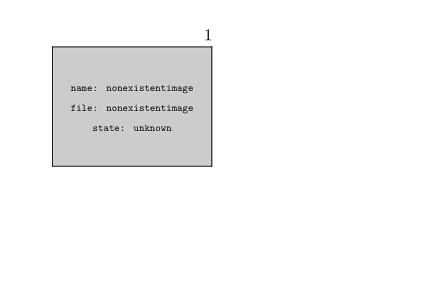
Sometimes, one would rather use a placeholder image for an image that is yet to be made. In such cases, load the MP library dum via:
\useMPlibrary[dum]
Then, whenever an image file is not found in the current search path, a random MetaPost image is shown in the output.
-
\setuppapersize[A8,landscape] \useMPlibrary[dum] \starttext \externalfigure[nonexistentimage] \stoptext
- 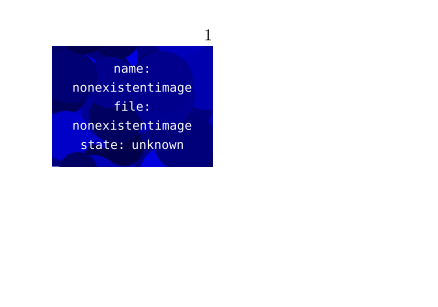
\externalfigure at the beginning of a paragraph
Using \externalfigure[...] at the beginning of a paragraph results in a line break after the image. This is because \externalfigure is a \vbox and when a \vbox is encountered at (what appears to be) the beginning of a paragraph, it remains in vertical mode. To prevent this, add \dontleavehmode before \externalfigure, like this:
\dontleavehmode \externalfigure[...] ... first line ...
-
\setuppapersize[A8] \starttext \externalfigure [cow.pdf] [width=2cm] \mirror{\externalfigure [cow.pdf] [width=2cm]} but \dontleavehmode % HERE \externalfigure [cow.pdf] [width=2cm] \mirror{\externalfigure [cow.pdf] [width=2cm]} \stoptext
- 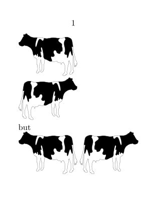
Multiple Image Settings
Image Settings
Suppose your document contains many side-by-side images, and you want all of these images to be of the same size. In addition, you want to control the size of all images by changing only one setup. To do this, you can use the \defineexternalfigure macro, which defines a named collection of image settings. For example, to define a collection where the image width is 3cm and to use these settings for an image:
-
\setuppapersize[A8] \defineexternalfigure [logo-settings] [width=3cm, background=color, backgroundcolor=middlecyan] \starttext \externalfigure [cow.pdf] [logo-settings] \stoptext
- 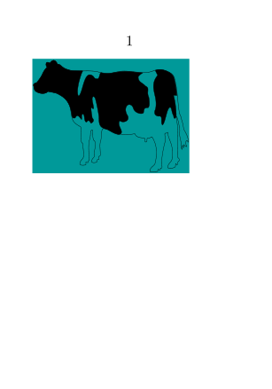
If you want to add or override settings locally, use:
-
\setuppapersize[A8] \defineexternalfigure [logo-settings] [width=3cm, background=color, backgroundcolor=middlecyan] \starttext \externalfigure [cow.pdf] [logo-settings] [width=\textwidth] \stoptext
- 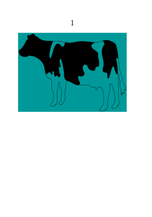
Image Labels
Suppose your document contains an image at multiple locations; all of these images are to be of the same size, which is not necessarily the same as the natural size of the image. Furthermore, as before, you want to set the size of all the images by changing only one setup. Here, the macro to use is \useexternalfigure, which defines a symbolic label for inserting an image plus settings. For example:
-
\setuppapersize[A8] \useexternalfigure [mycow] [cow.pdf] [width=2cm, background=color, backgroundcolor=middleyellow] \starttext \externalfigure[mycow] \stoptext
- 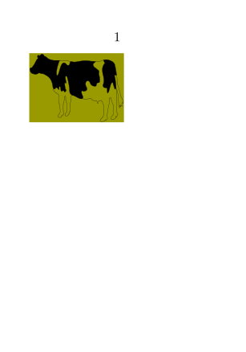
Here it defines an image label mycow that maps to the image file cow.pdf and sets its width to 2cm etc… And then this image label may be used as a normal image filename with \externalfigure.
Movies
- \definerenderingwindow to define the place where the video will be located.
- \userendering to define the video content.
- \placerenderingwindow to associate and place the window + the content.
-
\setuppapersize[A7] \setupinteraction [state=start] \starttext \definerenderingwindow [myrenderingwindow] [width=\textwidth, height=\textwidth, frame=off, background=color, backgroundcolor=middlegray, backgroundoffset=5pt] \userendering [myvideocontentB] [video/mp4] [https://wiki.contextgarden.net/images/b/ba/Project3-C.mp4] [embed=yes, auto] \placerenderingwindow [myrenderingwindow] [myvideocontentB] \stoptext
Wiki rendering produce static png. Please use context-on-web.eu and download the PDF file to test with your viewer.
Please see also Including audio and video.